Estilos
Certamente um dos recursos mais úteis e importantes do Writer assim como de outros editores de texto são os estilos. Os estilos são recursos básicos, que permitem a formatação do texto de forma simples e consistente. Uma vez aplicado o estilo, tudo grupo de formatações associado é aplicado de uma única vez. Da mesma forma, alterações no estilo têm impacto direto em todos os locais em que o estilo foi aplicado no documento, tornando o processo de modificações de formato muito mais simples. Além disso, os estilos são utilizados para automatizar a geração de tabelas de conteúdo, como sumários, lista de figuras, lista de tabelas.
Trabalhando com estilos¶
Os estilos são particularmente úteis na escrita de documentos com muitas páginas e/ou baseados em algum modelo. Alguns usuários aplicam formatação de parágrafo para cada trecho do documento que precisa respeitar a mesma estética. Embora produza o resultado esperado, é mais demorado e propenso a erros. Imagine que você tenha formatado um documento de 200 páginas e na última percebeu que o tamanho do corpo do texto deveria ser 11 e não 12, como está. O que fazer?
Sem utilizar estilos, a única opção é aplicar a formatação novamente em todos os trechos necessários. Já se utilizarmos estilos, basta editar a configuração do estilo e aplicar a alteração. Automaticamente todos os trechos associado àquele estilo será atualizados. Daí a importância de sabermos como utilizar este importante recurso.
O Writer oferece estilos para caracteres, parágrafos, páginas, quadros, tabelas e listas. Para cada um deles pode-se configurar uma ampla quantidade de parâmetros de formatação associados. Na sequência, as principais destas categorias de estilo serão descritas de forma detalhada.
Estilos de Parágrafo¶
Estilos de parágrafo controlam todos os aspectos de aparência de um parágrafo de texto, como alinhamento, paradas de tabulação, espaçamento entrelinhas, bordas, espaçamento antes e após o parágrafo, recuo de primeira linha, entre outros.
Para adicionar um novo estilo de parágrafo ao documento, o usuário deve acessar o Gerenciador de Estilos, o qual encontra-se no menu Estilos. Ao ativar o gerenciador, uma janela é apresentada encaixada à direita da tela de trabalho. Nela apresentam-se todas as categorias de estilo, bem como os estilos existentes para elas.
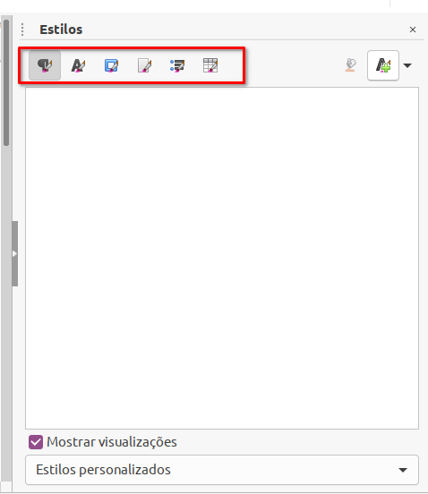
Para criar um estilo de parágrafo, devemos clicar com o botão direito no Gerenciador de Estilos, estando selecionado a opção Estilos de Parágrafo, opção Novo. Ao concluir o procedimento, a janela de configuração do novo estilo será exibida. Você irá perceber que o número de configurações é considerável. Iremos tentar explorar as principais na sequência.
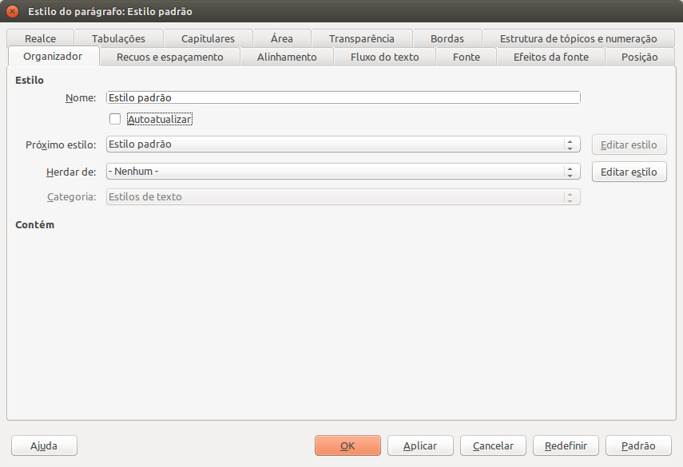
Aba Organizador¶
Permite configurar o nome do novo estilo, que é uma informação obrigatória. Este nome deve ser suficientemente auto-descritivo, de modo que possa indicar claramente sua aplicabilidade no documento. A configuração Auto atualizar deve ser utilizada se há interesse de que, quando aplicada uma formatação direta ao parágrafo, todos os demais parágrafos associados ao estilo recebam tal formatação de forma automática.
Próximo estilo refere-se ao próximo estilo de parágrafo aplicado assim que o usuário pressionar a tecla Enter estando em um parágrafo do estilo atual. É uma configuração muito útil para automatizar o fluxo de estilos de um documento. Há também a possibilidade de herdar propriedades de outros estilos preexistentes e de se associar o novo estilo a uma das categorias disponíveis.
Aba Recuos e Espaçamento¶
Aqui configuramos o distanciamento (recuo) do parágrafo em relação às margens esquerda e direita, bem como o recuo de primeira linha que deve ser aplicado. É possível aplicar medidas utilizando unidades como pontos (pt), centímetros (cm), milímetros (mm), metros (m), entre outras. Assim que o campo perde o foco, a ferramenta automaticamente converte a medida informada para centímetros.
Outro recurso é o espaçamentos antes e após o parágrafo. Caso este distanciamento deva ocorrer apenas quando o próximo parágrafo for de um estilo diferente, então deve-se marcar a opção Não adicionar espaços entre os parágrafos do mesmo estilo. O espaço entre as linhas do parágrafo é outra configuração disponível, que pode ser um dos valores predefinidos, como simples, 1.5 linhas, duplo, proporcional (100% equivale ao espaçamento simples), entre outros.
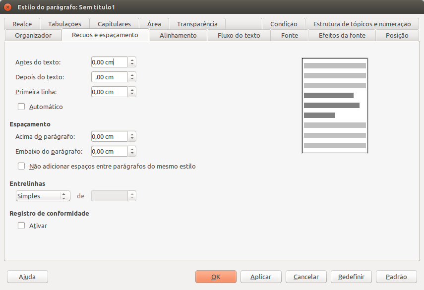
Aba Alinhamento¶
Especifica o alinhamento do parágrafo quando aplicado o estilo. Os alinhamentos disponíveis são esquerda, direita, centralizado e justificar. É possível definir também um alinhamento específico para a última linha do parágrafo, que pode diferir das anteriores. Pode-se também adicionar outras configurações de alinhamento relacionadas a idiomas asiáticos, caracteres subdimensionados e superdimensionados e de direção de entrada.
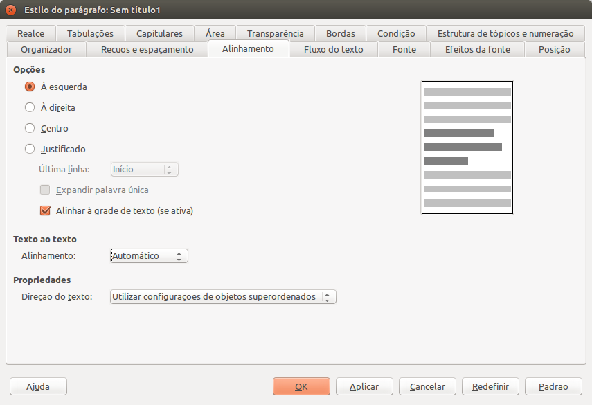
Aba Fonte¶
As opções de formatação de fonte compreendem a família, estilo, tamanho (em pontos) e idioma.

Aba Efeitos da Fonte¶
Efeitos da fonte, por sua vez, apresenta configurações relacionadas a efeitos, como cor, relevo, tachado, sublinhado, sobre linhas, sombra e contorno. É possível, por exemplo, definir que todas as letras serão convertidas para maiúsculo, minúsculo ou mesmo para título, onde a inicial de cada palavra é posta em maiúsculo e as demais letras em minúsculo.
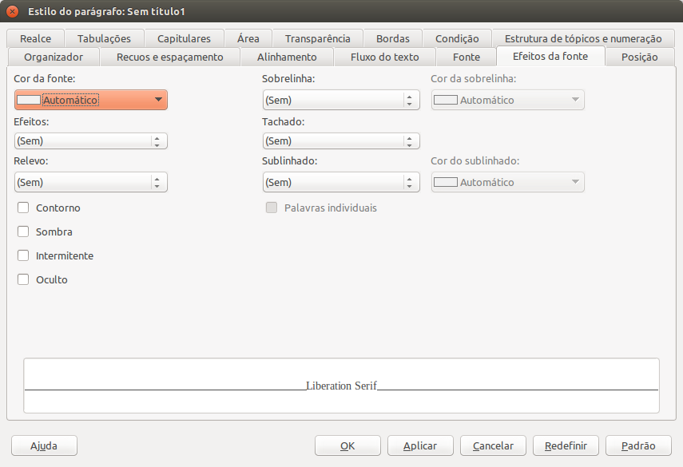
Aba Posição¶
Configurar a posição dos caracteres do parágrafo refere-se à mudança para sobrescrita, subscrita ou posição normal de escrita. Quando informado sobrescrito ou subscrito, pode-se informar o percentual de deslocamento para cima ou para baixo em relação a linha base. Outra configuração interessante é a possibilidade de rotacionar e/ou dimensionar caracteres de diversas formas.
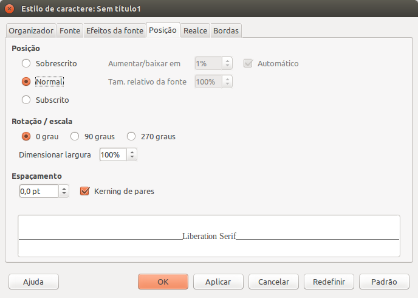
Aba Estruturas de Tópicos¶
A configuração de estrutura de tópicos é um recurso de grande valia para geração de sumário automático, por exemplo. Isso porque todo estilo de parágrafo está vinculado a um nível de estrutura específico do texto, que ao todo são 11. Dentre estes 11 níveis consta o Corpo do Texto, que refere-se ao conteúdo escrito e que não tem relação com a hierarquia de títulos do documento. Os demais 10 níveis, nomeados de Nível 1 a Nível 10, compreendem toda hierarquia de estrutura de títulos. Deste modo, se um determinado estilo for vinculado ao Nível 2, ele automaticamente indicará que o conteúdo do parágrafo corresponde a um título de nível 2 no documento.
Na configuração de Numeração especificamos qual é o estilo de lista utilizado para numerar o parágrafo. Também é possível habilitar e configurar a numeração das linhas do parágrafo, recurso muito interessante para redação de atas, por exemplo.
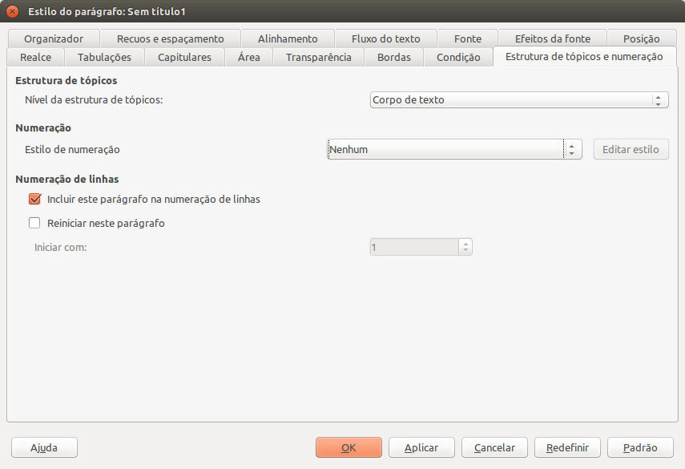
No caso da geração de sumário automático, cria-se um estilo para cada um dos 10 níveis da estrutura de tópicos, associando-os com um estilo de lista específico. Feito isso, basta configurar o documento para fazer uso dos estilos criados para numerar os diferentes capítulos. Tal configuração é feita por meio do menu Ferramentas-> Numeração de Capítulos, o qual dá acesso à janela de configurações.
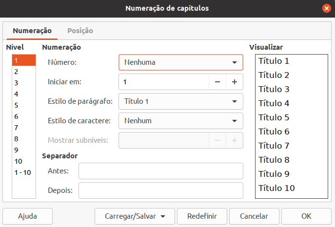
Estilos de Caracteres¶
Estilos de caractere permitem definir formatação específica para um único caractere ou palavra em meio a um parágrafo. Tal qual ocorre com os estilos de parágrafo, a criação de um estilo de caractere é feito clicando-se com o botão direito sobre a área branco do Gerenciador de Estilos, naturalmente estando agora na categoria Estilos de Caractere, selecionando a opção Novo.
As principais opções de configuração de estilos de caractere são oferecidas pelas abas Organizador, Fonte, Efeito de Fonte e Posição, todas elas já abordadas em detalhes.
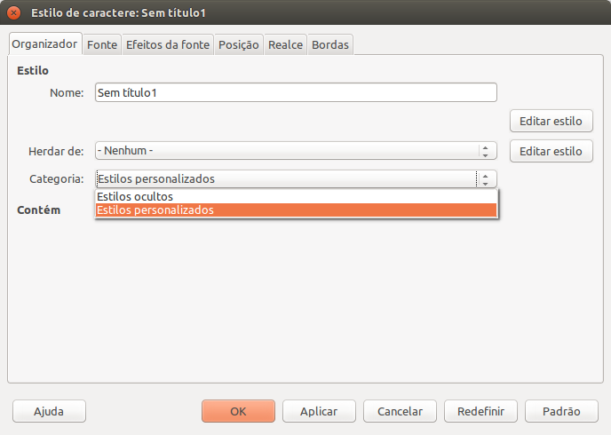
Estilos de Página¶
Assim como parágrafos e caracteres, as páginas de um documento também podem receber estilos de formatação. Normalmente os estilos de página são úteis para configurar margens, orientação, bordas e a aparência do cabeçalho, rodapé e notas de rodapé. O procedimento utilizado para criar um novo estilo de página segue o mesmo procedimento dos estilos de caractere e parágrafo. Há, contudo, alterações substanciais nas opções de formatação que podem ser configuradas, conforme podemos ver na tela a seguir.
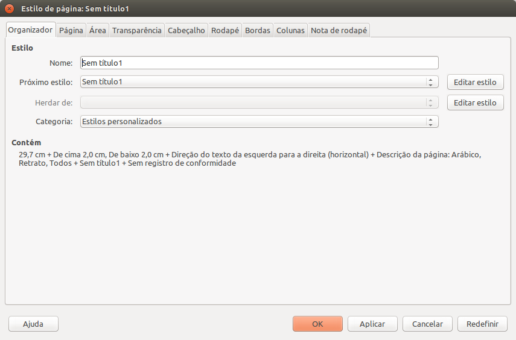
Aba Página¶
As configurações de página vão desde aspectos básicos, como formato do papel, margens e orientação a configurações mais avançadas de leiaute, como estilos vinculados somente às páginas da direita ou da esquerda e o tipo de numeração a ser utilizado. Um mesmo documento pode apresentar diversos estilos de página vinculados, em primeiro momento, pela possibilidade de um estilo de página vincular-se a um próximo estilo (Aba Organizador) e, em segundo momento, pela possibilidade de secção do documento em diferentes partes lógicas.
Este processo de seccionamento é feito pelo menu Inserir -> Quebra Manual. Dentre as opções oferecidas (quebra de linha, coluna e página), a quebra de página permite, a partir da posição do cursor, modificar o fluxo de estilos de página aplicados. As quebras de página são necessárias pois representam o único meio de alterar os fluxos de estilo sem modificar o documento integralmente, afinal inicialmente o documento encontra-se integralmente dentro de uma única seção de conteúdo.
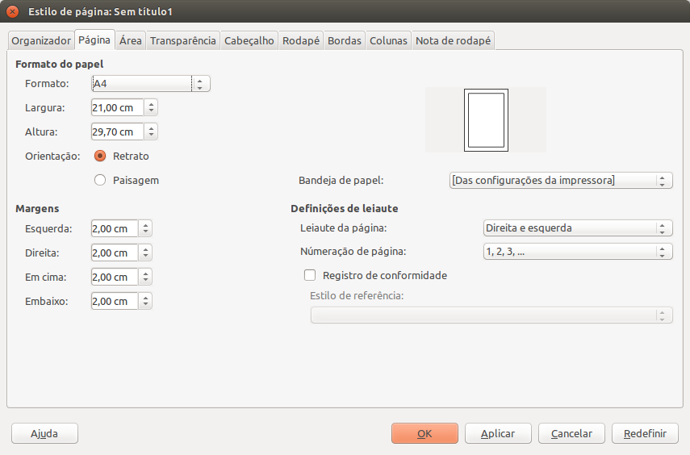
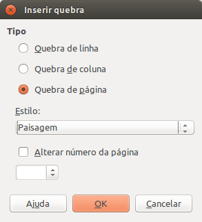
Aba Área¶
Permite configurar o preenchimento de fundo da página. Comumente nenhum preenchimento é utilizado, mas a ferramenta Writer permite utilizar preenchimentos de diferentes categorias, como Cor, Gradiente, Bitmap, Padronagem e Hachurado. Para ilustrar, imagem a seguir apresenta a opção preenchimento de área por hachuras.
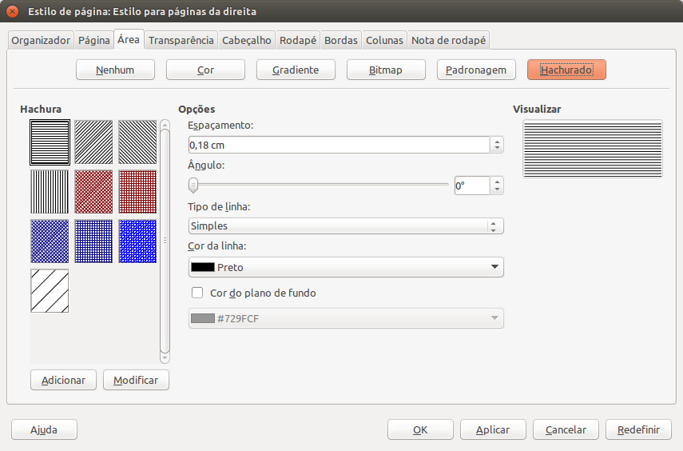
Aba Transparência¶
Sendo possível aplicar diferentes tipos de preenchimento à área da página, podemos também aplicar diferentes estratégias de transparência, como gradiente, padrão ou simplesmente nenhuma. Importante considerar que a transparência tem por efeito tornar gradualmente visível aquilo que encontra-se atrás do preenchimento e que a escala de valores inicia em 0%, indicando total opacidade até 100%, conferindo total transparência à área.
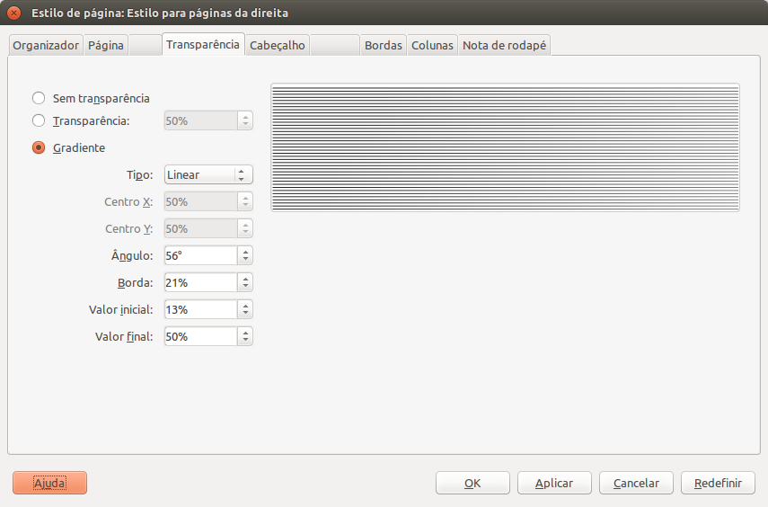
Aba Cabeçalho e Aba Rodapé¶
Cabeçalhos e rodapés são áreas nas margens superior e inferior das páginas para adicionar textos ou figuras. Os cabeçalhos e rodapés são adicionados ao estilo de página atual. Todas as páginas que usarem o mesmo estilo receberão automaticamente o cabeçalho ou rodapé adicionado. É possível inserir campos, tais como números de páginas e títulos de capítulos, nos cabeçalhos e rodapés de um documento de texto.
Quando configuramos cabeçalho e rodapé no estilo de página, estamos informando a aparência e formato que tais estruturas terão nas páginas onde o estilo em questão for aplicado. Cabeçalho e rodapé são estruturas opcionais, podendo ser exibidas ou não no documento.
Os principais atributos de formatação relacionados aos cabeçalhos são a repetição do conteúdo, tanto em páginas da esquerda quanto da direita e se a primeira página terá o mesmo conteúdo que as demais. Adicionalmente também é possível especificar as margens do cabeçalho (esquerda e direita). Para rodapé, os mesmos atributos de formatação de cabeçalho são aplicados.
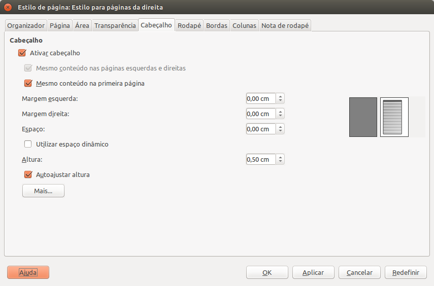
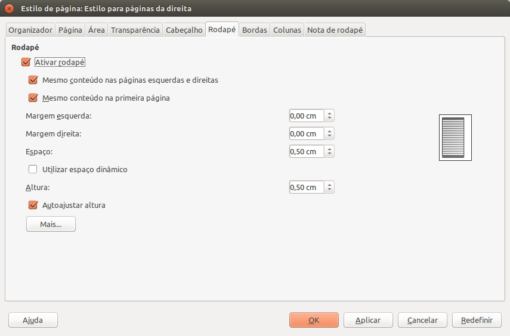
Aba Bordas¶
Bordas são contornos aplicados a diferentes objetos, dentre eles, às páginas. Na configuração de bordas pode-se especificar quais dos lados a borda estará ativa. Quando ativa, é possível também determinar o tipo de linha, espessura, cor, distância em relação ao conteúdo e efeito de sombra. Todas as opções disponíveis são apresentadas na aba Bordas.
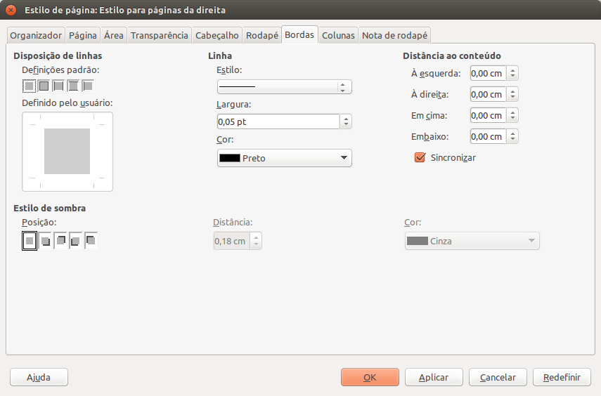
Aba Colunas¶
O espaço contido entre as margens, que é destinado ao conteúdo do documento, a depender do estilo da página, pode ser subdividido em colunas, na quantidade que o usuário desejar. Quando a quantidade de colunas for superior a 1 (um), torna-se possível configurar a largura de cada uma das colunas, espaçamento entre as mesmas e eventualmente as características da linha que as separa.
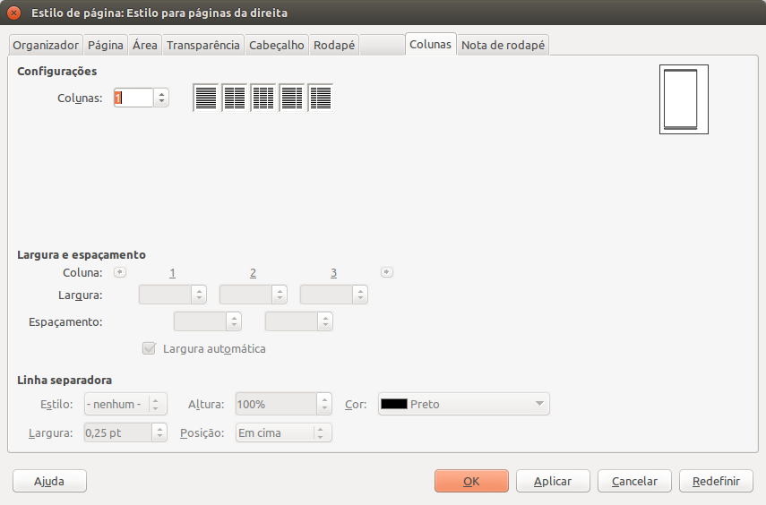
Aba Notas de Rodapé¶
Por vezes, na construção de um documento de texto, torna-se conveniente adicionar uma anotação explicativa ao pé da página. Comumente tal anotação está diretamente vinculada a uma palavra ou trecho de parágrafo da página em que se encontra. A este recurso tipográfico chamamos de nota de rodapé. No Writer, as configurações de formatação das notas de rodapé são feitas por meio dos estilos de página.
As opções de formatação oferecidas permitem controlar a área reservada para as notas e a configuração da linha separadora, que estabelece a divisa entre o texto e as suas respectivas notas. Com relação à linha separadora, é possível especificar a posição horizontal da mesma, sua espessura, cor, comprimento e distanciamento em relação a primeira nota.
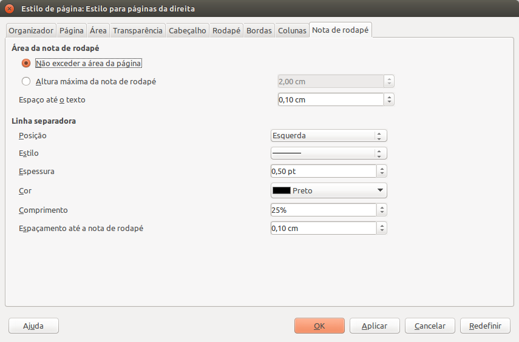
Referências¶
The Document Foundation. Ajuda do LibreOffice 7.1. Disponível em https://help.libreoffice.org/latest/pt-BR/text/shared/05/new_help.html?&DbPAR=WRITER. Acesso em 21 mai. 2021.